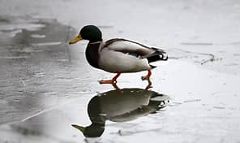

Caracteristicas de un pato
Un cuello corto
Tiene alas cortas que le permiten vuelos cortos
Tiene membranas en sus patas, lo que le permite nadar mejor
Tiene plumas de diferentes tonalidades
Quac
Animal
Raza
Pais
Perro
Galgo
España
Gato
Persa
Iran